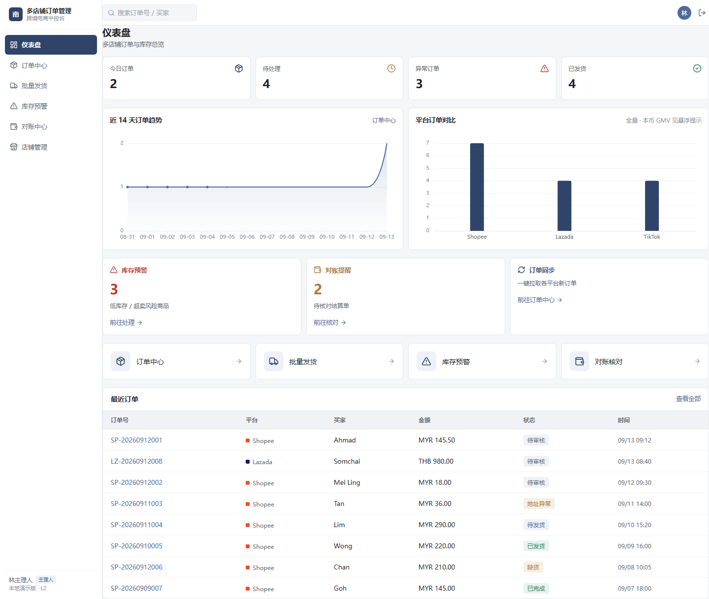
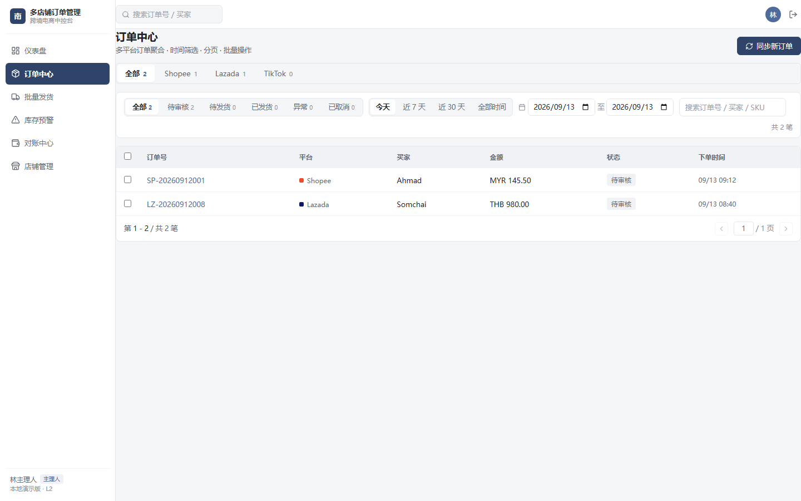
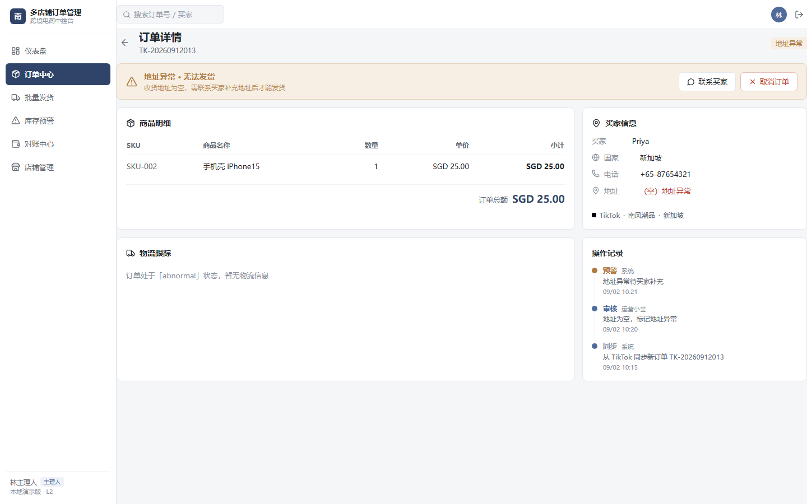
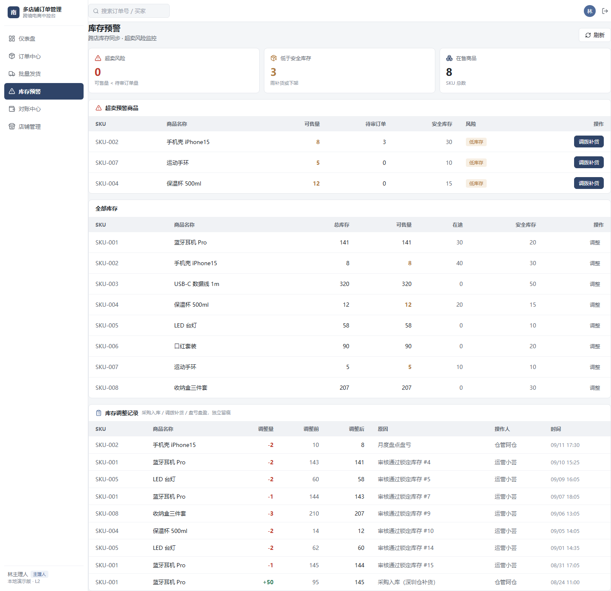
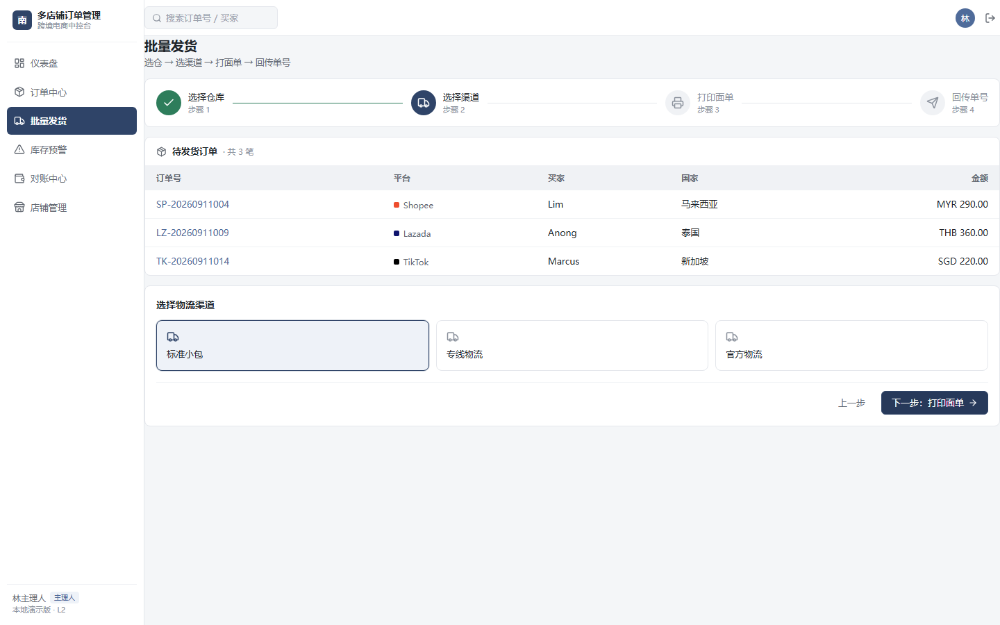
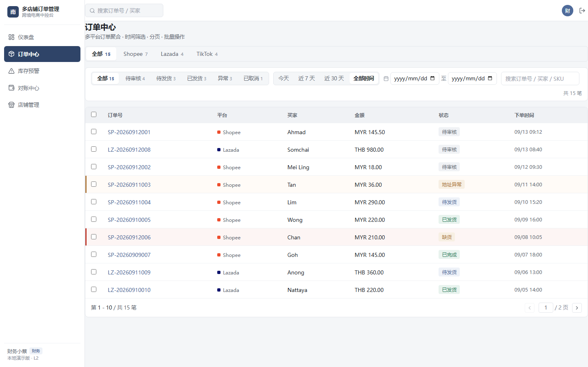
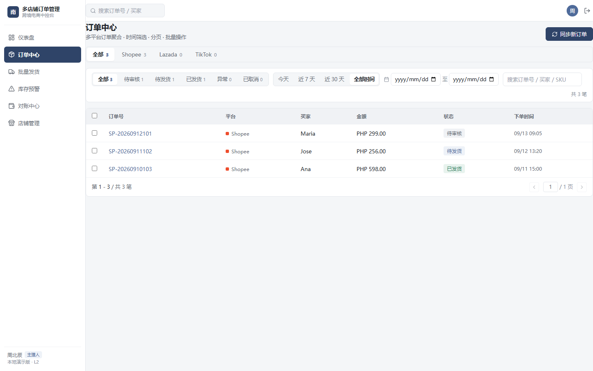
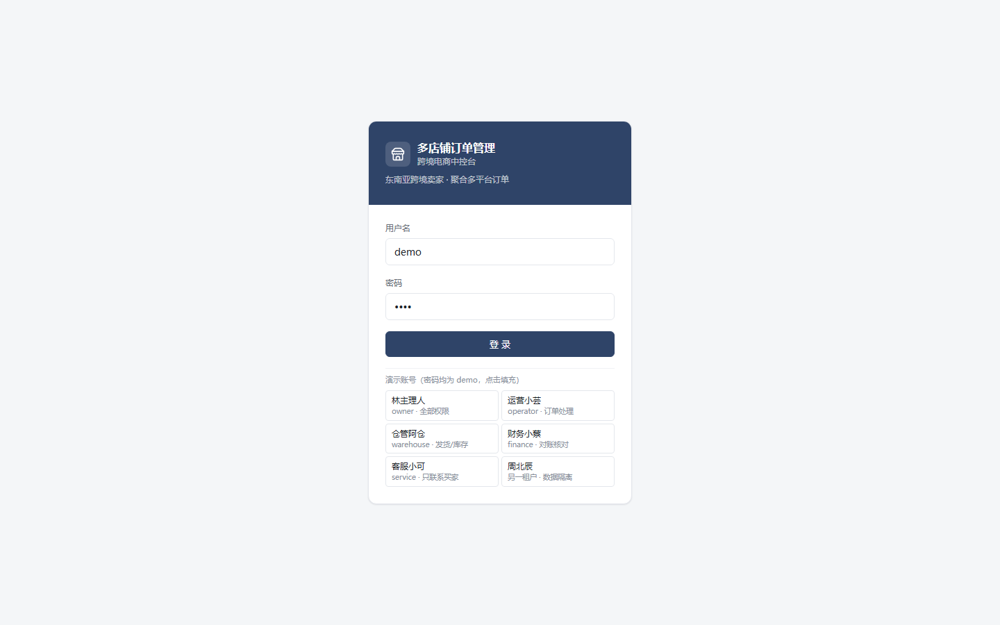

东南亚中小卖家普遍同时在 Shopee / Lazada / TikTok Shop 开 2–3 个平台、3–5 家店。这个项目把订单、库存、对账收进一个后台，覆盖「同步 → 审核 → 异常拦截 → 批量发货 → 对账」全链路。产品设计（画像 / IA / 状态机 / 数据模型 / 原型）与全栈实现、集成测试均独立完成。
竞品如 BigSeller 功能全但上手门槛高。差异化定位因此收窄为：聚焦订单处理核心链路，做轻、快、易上手——不做铺货、刊登这些已有成熟工具的功能。
审核环节同时做库存比对与地址校验：可售不足转「缺货异常」，地址为空转「地址异常」；审核通过时在同一事务内按订单明细扣减库存并写入调整留痕表（关联订单号）。异常单止步于审核，从入口杜绝超卖，而不是发货时才发现。
发货只回传物流单号、不再动账；取消时仅对已锁定过库存的订单回补——pending 与缺货异常单取消不回补，避免库存虚增。
预警口径 = 跨店可售量 vs 待审核订单的需求量。已锁定库存的订单不会再造成超卖，把预警留给真正有风险的 pending 单，可售低于待审需求即标高危——比单纯的「低库存阈值」更贴近真实风险。
中小卖家团队有明确分工：主理人 / 运营 / 仓管 / 财务 / 客服。权限在后端做动作级强校验（越权返回 403），前端按角色隐藏入口；数据按租户（团队）隔离，跨租户访问详情返回 404 而非 403，不泄露资源存在性。这是财务和客服角色可以放心开通权限的前提。
| 操作 / 角色 | 主理人 | 运营 | 仓管 | 财务 | 客服 |
|---|---|---|---|---|---|
| 同步订单 / 批量审核 | ✓ | ✓ | – | – | – |
| 批量发货 / 调拨补货 | ✓ | ✓ | ✓ | – | – |
| 取消订单（异常处理） | ✓ | ✓ | – | – | – |
| 库存调整 | ✓ | – | ✓ | – | – |
| 结算单核对 | ✓ | – | – | ✓ | – |
| 联系买家 | ✓ | ✓ | – | – | ✓ |
店铺 / 商品 / 买家 / 单号按规则轮换生成，同一份种子永远得到同一批数据。32 项 API 集成测试在独立临时库上跑真实 HTTP 服务，覆盖鉴权、多租户隔离、RBAC 越权、状态机流转、库存锁定口径、分页不重不漏与对账差异回传。







